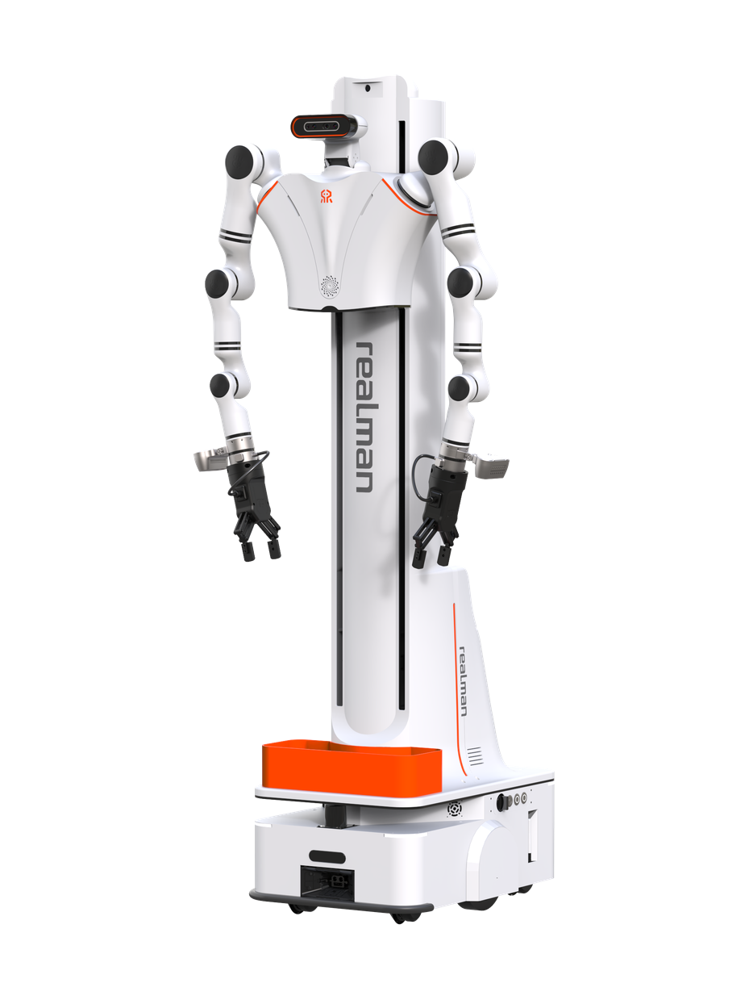

Dual-Arm Lift
A wheeled humanoid robot from China.
Sources retrieved: 12 October 2026 (A)
- Applications
- Intended use, per the manufacturer
- Enables wired teleoperation for real-time robot control, dual-arm data collection, and AI model training workflows.Source and note: Intended use, per the manufacturerA realman-robotics.com/en/products/dual-arm-lift.html · Retrieved 12 October 2026
- Indicative price
- Not stated

Manufacturer's rendering.
Specifications
5/32 specifications disclosed 27 not stated
27 fields hidden
How to read the figuresShow guideClose
- not statedNo source
- noStated by a source
- 0Reported as zero
- ASource
- A*Source with a caveat (select it)
- CERecords only what the manufacturer states regarding CE marking.
Select a source marker for source details and notes.
Physical4/13 disclosed
Power1/5 disclosed
Sensing and autonomy0/6 disclosed
Payload and expansion0/3 disclosed
Commercial0/1 disclosed
Compliance & certifications0/4 disclosed
Against the field
Each strip holds every robot of this type in the guide that states the figure, one bar per group of values. Further right means a larger figure, not a better robot. A taller bar means more robots in that group.
Weight
approximately 157kgapproximately 346lbOur conversion from 157 kg. The manufacturer does not state an imperial figure itself, so the conversion has no source of its own.
94 wheeled humanoids state a weight
18 state a higher figure, 67 a lower one. 8 state only a bound (≥ or ≤) and are not ranked. Log scale: each step along the axis multiplies the value.
Runtime
180–240minNote: load condition not stated
106 wheeled humanoids state a runtime
Dual-Arm Lift states a range, not one figure, so it is shown as a band and not ranked against the others. 31 state only a bound (≥ or ≤) and are not ranked.
Max speed
5.4km/h3.36mphOur conversion from 1.5 m/s. The manufacturer does not state an imperial figure itself, so the conversion has no source of its own.
98 wheeled humanoids state a top speed
14 state a higher figure, 30 a lower one. 33 more state exactly the same figure. 5 state a range that includes this figure. 15 state only a bound (≥ or ≤) and are not ranked.
Notes
The producer describes the Dual-Arm Lift as a vertical lift mobile robot with dual RM65-B-V arms, a 900 mm lifting stroke, 5 kg payload per arm, and autonomous navigation capabilities.
The producer lists the RM75-B-V as an optional arm.
The producer gives a lifting stroke of 900 mm and a vertical reach of 0–2400 mm, with a lateral reach of 790 mm per side and a forward reach of 0–690 mm.
Sources
One line per source, not per figure: a source has one retrieval date.
- Arealman-robotics.com/en/products/dual-arm-lift.htmlMain source. Retrieved 12 October 2026